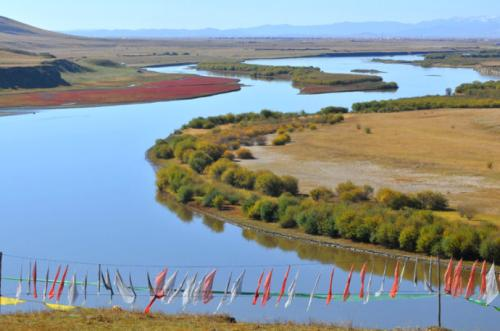
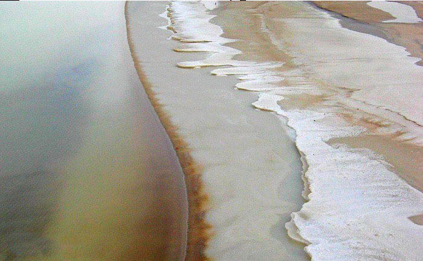
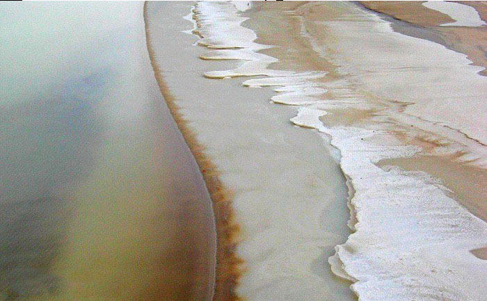
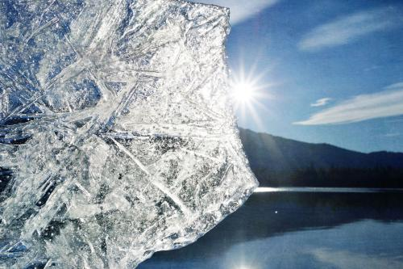
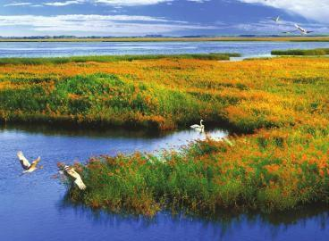

海洋
海洋是地球上最广大连续的咸水水体的总称。海洋的中心主体部分称为洋，边缘部分称为海，彼此沟通组成统一的 水体。今天的地球上共有五大洋，分别是太平洋、大西洋、印度洋、北冰洋和南大洋。南大洋是一个较新的概念， 由原太平洋、印度洋、大西洋靠近南极大陆的一部分水域组成，但目前国际上对此还有争论。海分为边缘海和地中 海两类，前者指毗连大陆边缘的海，后者则指位于大陆之间，有海峡与海洋相通的海。
地球上海洋面积约3.6亿平方千米，占地球总面积的71%。海洋总水量约13.38亿立方千米，占水圈总量的96.5%。传 统的四大洋中，太平洋面积最大，水量最多，北冰洋面积最小，水量也最少。海洋是全球水循环中的主要水汽源地， 也是大气热量的主要来源区域，对水圈中的水汽和热量交换起着决定性的作用。

河流
河流是指在地球重力作用下，集中于地表线形凹槽内的经常性或周期性的天然水道。
每一条河流都有河源和河口。河源是河流的发源地，可能是冰川、湖泊、沼泽或泉眼。河口是指河流与海洋、湖泊、 沼泽或另一条河流的交汇处。河源与河口之间是河流的干流，一般可划分为上、中、下游三段。在某些特殊的自然 条件下，河流会呈现出一些独特的性质。例如，在喀斯特地区，河流走向受喀斯特地貌的控制，地表水有可能通过 溶洞、裂隙、漏斗转入地下，形成看不见的地下暗河。
湖泊
湖泊是指陆地上相对封闭的洼地中所汇积的面积较大、水分交换缓慢的水体。
湖泊一旦形成，就在内外各种因素作用下不断演变。入湖河流携带的大量泥沙和生物残骸在湖内沉积，湖盆逐渐淤 浅，最终形成陆地或沼泽。干燥气候条件下的内陆湖可能因种种原因导致来水减少，补给水量不足以补偿蒸发损耗， 从而引起湖面退缩干涸，湖水日益盐化，最终形成干盐湖。无论湖泊以何种方式演变，最终都将逐渐消失。
 

地球上湖泊总面积约2058700平方千米，占陆地总面积的1.5%。湖泊总水量约176400立方千米，其中淡水约占52%左 右。我国湖泊众多，面积大于1平方千米的湖泊有2300多个，总面积 71000多平方千米。青藏高原东部的青海湖面积 4000多平方千米，是我国面积最大的湖泊。西藏的纳木错，湖面海拔4718米，在全球1000平方千米以上湖泊中，海 拔最高。东北长白山上的天池，水深373米，是我国最深的湖泊。西北柴达木盆地的察尔汗盐湖是我国面积最大的盐 湖。
冰川
冰川是指分布在地球两极或高山地区，在地球重力作用下能够自行运动并长期存在的固体状态的水。冰川通常由大气 降雪，经多年积累而成，是地表主要的淡水资源之一。
冰川由冰川冰构成，它是一种高密度的结冰体，与自然状态下由水冷冻结成的冰完全不同。刚刚降落到地面上的雪疏 松而多孔，密度0.01～0.1g/cm3，孔隙度达67～99%，称为新雪。新雪如果没有融化，在后续降雪的堆 压下，逐渐密实，冰晶由六角形变为圆形，冰的密度增加，孔隙度降低，这一过程称为粒雪化。当粒雪密度达到0.8g /cm3时，晶粒间失去透气性和透水性，成为冰川冰。粒雪转化为冰川冰的过程十分缓慢，通常需要数千 年时间。
冰川按形态可分为冰盖、冰原和山岳冰川三种类型。冰盖是指面积大于5万平方千米的陆地冰川体，冰原是面积在数千 至5万平方千米之间且表面较平坦的陆地冰川体，而山岳冰川主要分布于地球高海拔地区，面积通常较小。
湿地
湿地通常指天然或人工形成的、长久或暂时存在的沼泽地、泥炭地或水域地带。湿地包括静止或流动的淡水、半咸水或 咸水水体，以及低潮时水深不超过6米的浅海水域。与海洋、河流、湖泊、冰川等传统水体名词相比，湿地是一个全新 的概念，它是近几十年来，伴随着对地球生态环境的重视而逐渐受到人们关注的一类具有提供水源、调节气候等多种功 能的生态系统。正因为它对人类生存环境的重要性而被称为“地球之肾”。我国的湿地面积居亚洲第一位，黑龙江的扎龙、 江西的鄱阳湖、青海的青海湖鸟岛都是著名的湿地自然保护区。
